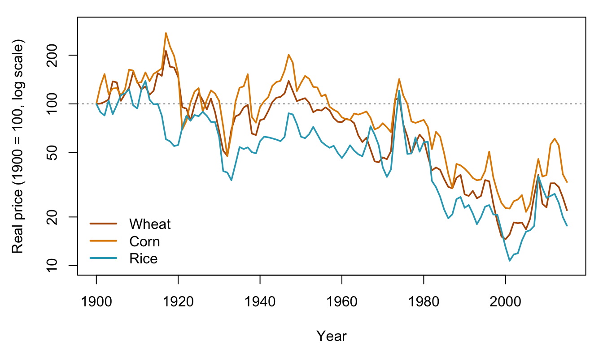
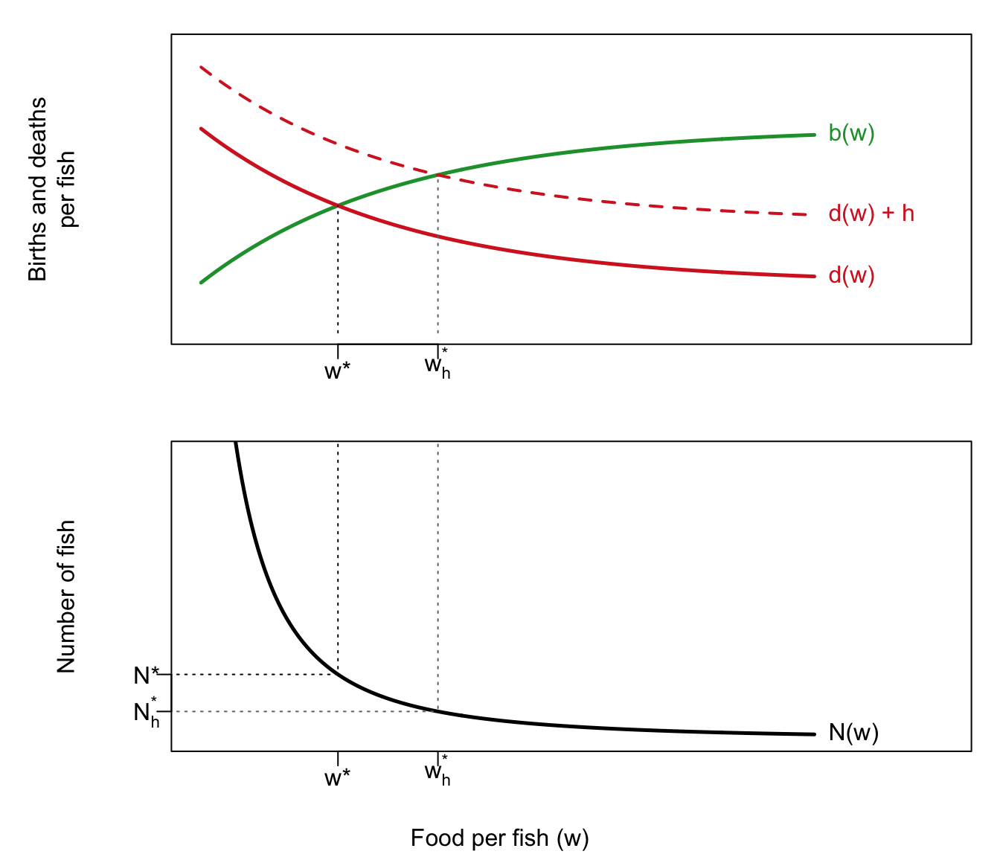
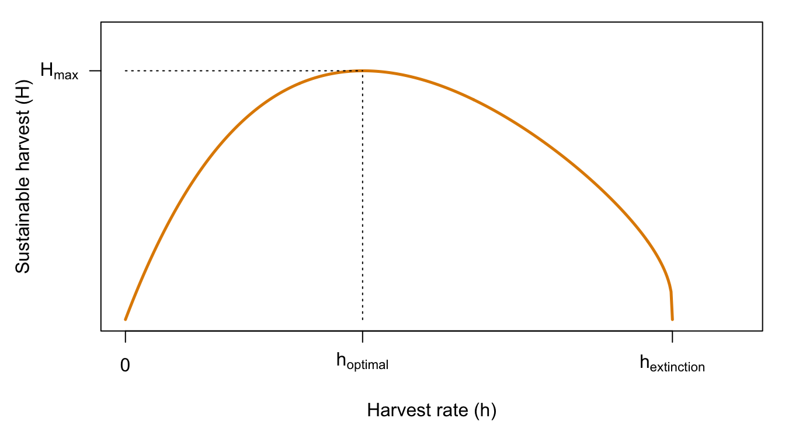

| Population | Year | Years to double from previous row |
|---|---|---|
| 200 million | 1 | |
| 400 million | 1000 | 999 |
| 791 million | 1750 | 750 |
| 1.6 billion | 1900 | 150 |
| 3.0 billion | 1960 | 60 |
| 6.1 billion | 2000 | 40 |
6 Are We Doomed? Resources, Prices, and the Commons
Draft: provenance notes (for review)
Margin tags mark material that is not in the course slides or lab. Added · from readings comes from the assigned readings (Lam, Becker, Hardin, Nordhaus). Added · new is from outside the course materials (my framing, general knowledge, or my own analysis) and needs the closest check. Untagged material follows the 2025 slides (10 Doomed, 11 and 12) and Labs 4 and 5.
Added · new Bridge text written for the chapter split.
Chapter 5 showed how, over the long run of history, population growth could call forth new technology. This chapter asks whether the same optimism holds for the last half century, when population grew faster than ever before. Lam’s answer rests on markets and prices, so the second half of the chapter looks at what happens when prices fail, as they do for shared resources like fisheries. Chapter 7 applies the same logic to the largest commons of all, the atmosphere.
6.1 Are we doomed?
6.1.1 Doubling times
This chapter turns from the distant past (Chapter 5) to the last half century. Table 6.1 shows how long it took the world’s population to double.
Added · new The slide gives 250 years for the 1750–1900 doubling. The dates imply 150, which is also Lam’s figure.
What comes next in the sequence 999, 750, 150, 60, 40? Take a guess before reading on.
Added · from readings Lam (2011), pp. 1232–1235.
David Lam, in his 2011 presidential address to the Population Association of America, reports that when he asks his students this question, most choose 20 or 30 years. “The correct answer is almost surely more than 100 years.” It is even plausible that the world will never reach 12 billion. World population growth peaked at just over 2 percent per year in the 1960s (about 2.2 percent by the Census Bureau’s estimates), shortly before Paul Ehrlich published The Population Bomb in 1968. Growth then fell rapidly. The UN’s 2010 medium projection, which Lam used, put the world at 9.3 billion in 2050 and 10.1 billion in 2100, with a 2050 growth rate of 0.38 percent, a doubling time of about 175 years. “It is virtually certain that world population will never again double in 40 years, making the 1960–2000 experience absolutely unique in human history.”
6.1.2 What would it mean to be “doomed”?
Before asking whether we are doomed, we should be clear about the question. Pair a condition with an outcome:
| Condition | Outcome |
|---|---|
| If population grows quickly | humans go extinct |
| If forecasts are true | we will be worse off in the future |
| Even if growth stops | progress will slow |
| If population shrinks | progress will continue |
| progress will accelerate |
Different combinations are very different claims. “If population keeps growing quickly, humans will go extinct” is a long way from “even if growth stops, progress will slow.”
6.1.3 Can prices save us?
The economist Julian Simon argued that “the only meaningful measure of scarcity in peacetime is the cost of the good in question.” If a resource is really running out, its price should rise.
Added · from readings Lam (2011), pp. 1241–1243.
Lam explains the economist’s reasoning: “it’s hard to develop a model in which a resource that is about to be depleted has a price that is declining, especially a resource owned by private individuals or governments.” Simon, whose 1981 book was titled The Ultimate Resource (meaning human ingenuity), was “the poster child for optimism.”
In 1980, Simon offered to bet that the price of any mineral would fall. The ecologist Paul Ehrlich and colleagues took him up on it. They chose five metals and bought $200 worth of each (on paper). If the inflation-adjusted cost of the bundle was lower in 1990, Simon won.
| Metal | 1980 | 1990 |
|---|---|---|
| Chromium | 200 | 120 |
| Copper | 200 | 163 |
| Nickel | 200 | 193 |
| Tin | 200 | 56 |
| Tungsten | 200 | 86 |
| Total | 1000 | 618 |
Every metal fell in real price. The bundle’s cost fell 38 percent, and Ehrlich wrote Simon a check. Meanwhile, world population grew by 28 percent, or 830 million people, over the decade of the bet. Lam adds an important caveat: the longer record is more complicated. These metals’ prices rose in the 1960s and 1970s, fell in the 1980s and 1990s, and rose sharply again in the 2000s. Simon would have lost if the bet had ended in 2007, and won if it had ended in 2009. “The big picture,” Lam concludes, “is that these important nonrenewable resources cost about the same today as they did 50 years ago, despite the addition of 4 billion people.”
In the lab
In Lab 4 you replay the bet using a century of commodity prices compiled by the economic historian David Jacks. You ask how much the timing mattered, and whether different kinds of commodities behave differently.
6.1.4 Kinds of resources, and substitution
Resources come in two kinds. Some are exhaustible: copper, coal, “virgin forest.” Others are renewable: topsoil, fisheries, forests, water. For both, substitutability is an important issue.
Consider whale oil, which was burned in lamps. What people want is the service, lighting. As overfishing made whale oil more expensive, people switched to petroleum and, later, light bulbs. The outcome was not so good for whales, but fine for the service of lighting for humans. The very long-run price of lighting in the UK fell steeply from the 1800s onward, as new sources replaced old ones (a chart from Fouquet and Pearson, in lecture).
Food is a renewable resource. Figure 6.1 shows real prices of three grains since 1900, from the same data used in Lab 4.
Show the R code
op <- par(mar = c(4, 4.5, 1, 1))
grains <- c("Wheat", "Corn", "Rice"); gcols <- c("#b35806", "#e08a00", col_ag)
plot(commod$year, commod$Wheat, type = "n", log = "y", ylim = c(10, 300),
xlab = "Year", ylab = "Real price (1900 = 100, log scale)")
abline(h = 100, lty = 3, col = col_grey)
for (i in 1:3) lines(commod$year, commod[[grains[i]]], col = gcols[i], lwd = 1.8)
legend("bottomleft", grains, col = gcols, lwd = 2, bty = "n")
par(op)
Real grain prices were volatile, with large spikes, including in the 1970s and around 2008. But the long-run trend is down, by roughly two-thirds or more since 1900, during a century in which world population roughly quadrupled. In the 1970s, as lecture notes, fears of scarcity were not soothed by the data, because grain prices had just spiked. Since then, prices have mostly fallen.
What, then, has gotten more expensive over the last century? Any consumer goods? Any commodities? Anything at all? It’s a good question to think about.
6.2 Lam’s argument: how the world survived
6.2.1 An argument from the extreme case
Lam’s argument works by looking at an extreme case. The last fifty years saw the fastest population growth in human history. If things got better for people even then, that tells us something. He looks at three kinds of indicators: human well-being (poverty), a renewable resource (food), and exhaustible resources (metals and other commodities, discussed above).
Added · from readings Figures in this table and the next subsections are from Lam (2011), pp. 1238–1245.
| Indicator | Change |
|---|---|
| World food production | × 3.1 |
| World population | × 2.2 |
| World food production per person | +41% |
| India: food per person | +37% |
| Sub-Saharan Africa: food production | × 3.4 |
| Sub-Saharan Africa: population | × 3.6 |
| Sub-Saharan Africa: food per person | about −7% |
| Poverty rate, low- and middle-income countries | 52% → 25% |
| Poverty rate, China | 84% → 16% |
| Poverty rate, sub-Saharan Africa | 53% → 51% |
Food. “The battle to feed humanity is already lost,” Ehrlich wrote in 1968, predicting large-scale famines within a decade. Instead, world food production grew faster than population in every decade. India, the focus of Ehrlich’s direst predictions, saw per capita food production rise 37 percent between 1961 and 2009. Sub-Saharan Africa is the exception that proves the point: its food production grew faster than the world’s, but its population grew faster still.
Poverty. The World Bank’s estimates show the share of people in poverty in low- and middle-income countries falling by half between 1981 and 2005, and the absolute number falling from 1.9 billion to 1.4 billion. China drives much of the decline. In sub-Saharan Africa the poverty rate barely moved, and the number of poor people nearly doubled.
6.2.2 How did we survive?
“Arguably the biggest mistake made by the pessimists of the 1960s,” Lam writes, “was in underestimating the impact of these adaptations.” He names six, three economic and three demographic.
- Market responses. When food prices rise, farmers grow more. After Vietnam gave farmers more incentives from 1981 on, its food production soared. By 2009 it was 5.5 times its 1960 level, and Vietnam went from a major rice importer to the world’s second-largest exporter.
- Innovation. “What made it possible for the world to escape from … the Malthusian trap? The answer is simple: the creation of knowledge” (D. Gale Johnson). Norman Borlaug’s high-yield wheat raised Indian wheat yields 60 percent between 1967 and 1972. Lam explicitly connects such innovations to Boserup: many were “arguably examples of population-induced technological progress.”
- Globalization. Trade grew dramatically, and some of the biggest winners were the very countries people worried about in the 1960s, such as India.
- Urbanization. About 65 percent of the 4 billion people added since 1960 live in towns and cities.
- Fertility decline. The world’s TFR fell from 5.0 in the early 1950s to 2.5 in 2010, which is 85 percent of the way to replacement. The falling infant mortality that caused the explosion also helped end it.
- Investment in children. Schooling soared even as school-age populations grew 3 to 4 percent a year. In Thailand, the share of boys completing primary school rose from 18 percent (1950) to 95 percent (1990). Families traded “quantity” of children for “quality.”
6.2.3 Have we really survived?
Lam did not claim everything had gone well. He singled out environmental problems where markets fail: “In domains with ownership of resources and well-functioning markets, as with food and most other commodities, market pressures and price signals induce increased supply, behavioral change, and innovation extremely well. In domains without markets and resource ownership, problems are much more likely.” He also pointed to successes when policy tackled such problems: U.S. sulfur dioxide emissions fell by more than half after 1970, and the 1987 Montreal Protocol cut ozone-destroying CFCs.
His closing image is worth remembering:
“Imagine someone writing in 1961 that in 50 years we would be worrying about how fast per capita consumption is growing in India and China, rather than worrying about mass starvation in those countries.” (Lam 2011)
6.2.4 The “reasonable” economist
Lam’s position is what lecture calls the “reasonable” economist’s view: with functioning markets, increasing population will not cause environmental disaster, but rather adaptation and substitution. But, as MacKellar and Horlacher put it, “When markets are structurally flawed, or when poverty inhibits the operation of market forces, population size and rate of growth usually magnify the adverse impact on natural resources and the environment.”
Sam Preston, reviewing Simon’s The Ultimate Resource, drew a careful conclusion from the historical record: “All we can conclude from a concurrence of accelerated economic growth and population growth is that population growth is not so overwhelmingly negative a factor for economic advance as to swamp the impact of all other influences.”
6.3 Becker’s critique, and Lam’s reply
Added · from readings This section summarizes Becker (2013) and Lam (2013). Neither is on the slides beyond the reading list.
6.3.1 Becker: what about the rest of the world?
Stan Becker, a demographer at Johns Hopkins, did not dispute Lam’s data. His complaint was about the word “world.” “95 % of the article focuses on Homo sapiens,” he wrote. “Although Homo sapiens has done well, as Lam described, the rest of ‘the world’ has suffered from the success of our species.” He pointed to two problems.
Unsustainable use of resources. The growth in food production required fertilizer made from natural gas and phosphorus, and massive irrigation. Global groundwater overdraft is about 160 billion cubic meters a year, about twice the annual flow of the Nile. Water tables in parts of India have been falling a meter or more a year. Rivers such as the Colorado barely reach the sea.
Damage to the planetary ecosystem. Forests are being cleared at about 13 million hectares a year, an area the size of New York State. Extinction rates are estimated at 100 to 1,000 times their natural background level. Among the large primates, every species except our own is endangered. “Unfortunately, when a species is gone, it is gone forever.”
Becker proposed the framework of ecological economics: the economy is embedded in nature, development should meet “the needs of the present without compromising the ability of future generations to meet their own needs,” and ecosystems can respond to stress in sudden, nonlinear ways. He ended with a question: “Will birth cohorts of 2040–2050 look back and wish our generation had done more to preserve the world that was bequeathed to us? I do believe so.”
6.3.2 Lam: externalities, not numbers
Lam’s reply opens with a nickname an online commenter had given him: “Professor Happy Talk.” He concedes that his “world” was the human world, though he notes that a 1960 forecaster who predicted the main worry of 2013 would be the effect of human success on other species would have been considered wildly optimistic. He agrees with Becker about aquifers, which suffer from the same lack of property rights as air pollution and overfishing. He is much less worried about running out of oil or other resources with clear property rights and active markets. The urgent problem, he argues, is not running out but cutting carbon emissions, which markets alone will not do.
Lam’s central point is about cause and cure:
In his own words
“Stopping population growth is unlikely to end aquifer depletion or deforestation, as long as the fundamental externality issues have not been solved.” (Lam 2013)
On deforestation, for example, he cites evidence that illegal logging in Indonesia depends on how political jurisdictions are organized. “The point is that it will take institutional change, not simply the end of population growth, to solve the problem.” Lam also pushes back on Becker’s definition of sustainable development, asking what practical guidance it really provides. Read his reply to see how he makes the case.
6.4 Lam’s conclusion, and ours?
Lam’s conclusion: things got better for people even during the era of peak population growth, so they should continue to get better as population growth slows.
But following Preston, we might add two cautions. The last fifty years were also a time of enormous economic growth. Perhaps economic growth will slow down faster than population growth. And even Lam’s own timing illustrates how volatile the evidence can be. As he was writing in 2011, food prices were spiking, and he asked himself what he would bet. In lecture we look at the FAO food price index: had Lam bet on falling food prices in 2011, he would have “won.”
Finally, there is risk aversion. There is a lot of uncertainty about major issues such as global warming and species extinction. If change is basically for the better, we don’t need to be afraid. If we’re not so certain, then perhaps we should be careful, even if we are not strict conservationists. Or, as lecture puts it: “How fast should we drive in the dark?”
6.5 When prices fail
Markets coordinate an enormous amount of behavior through prices. When something becomes scarce, its price rises, people use less of it, and producers make more. Earlier in this chapter, the resources that “survived the population bomb” were mostly ones bought and sold in markets. But some goods are badly priced, or not priced at all. Lecture lists four kinds of pricing problem:
- The tragedy of the commons. Someone exploiting a shared resource gets all of the benefit but pays only a tiny fraction of the cost. Examples: ocean fisheries, tropical forests, and the library book returned to the easiest shelf rather than its proper place.
- Public goods. Someone can use the good without taking it away from anyone else, as with clean air or knowledge. The problem is that individuals have little incentive to improve it or invest in it.
- Externalities. Costs, such as pollution, that are not reflected in prices.
- Poverty. People with no alternatives cannot respond to the price signals that tell them a resource is getting scarce.
Added · from readings Nordhaus 2018, pp. 440–442.
William Nordhaus, who shared the 2018 Nobel Prize in economics for his work on climate change, puts the problem in the language of public goods. A public good has two key features. The cost of extending it to one more person is zero (“nonrivalry”), and it is impossible to keep anyone from enjoying it (“nonexcludability”). Climate change is the mirror image, a “public bad.” Greenhouse gas emissions spread their harm around the whole planet, and no one can be shielded from it. What makes climate change “particularly thorny,” Nordhaus writes, is that the externality is global: “none of us acting individually can do anything to slow the changes.”
6.6 Optimal harvesting
Start with something simpler than the climate: a population of fish. Fish, timber, and fresh water are all renewable resources. A simple sustainability rule is that a renewable resource lasts forever as long as its “renewal rate” is at least as large as its “losses.”
More formally, let
- \(b\) = the birth rate, the fraction of the resource newly available each year;
- \(d\) = the death rate, the fraction lost each year without harvesting;
- \(h\) = the harvest rate, the fraction harvested each year.
The resource is sustainable if
\[ b \ge d + h. \]
6.6.1 A Malthusian fish population
Fish face the same constraints as Malthus’s farmers. Suppose fish have birth and death rates that depend on how much food each fish gets, and food per fish falls as the number of fish rises. This is exactly the Malthusian diagram from Chapter 3, with “food per fish” in place of wages. Without any fishing, the population settles at the equilibrium \(N^*\), where births equal deaths.
Now we harvest a fraction \(h\) of the fish every year, for a total harvest of \(H = h \times N\). To the fish, harvesting is just another source of death. The death curve shifts up by \(h\), from \(d(w)\) to \(d(w) + h\) (Figure 6.2).
Added · new The figures in this section are drawn from an illustrative model I constructed (functional forms in the setup code). They reproduce the shapes in your slides, not your app’s numbers.

The harvested population settles at a new, smaller equilibrium, \(N^*_h\). The surviving fish are better fed, so their birth rate rises and their natural death rate falls, just enough to make up for the fish we take. A population can be harvested forever this way.
Can we fish a population to extinction? Yes: if the harvest is so large that \(d + h > b\) at every level of food per fish, deaths always exceed births, however few fish are left and however well fed they are.
6.6.2 The maximum sustainable harvest
How much should we harvest? Think about the total sustainable harvest, \(H = h \times N^*(h)\):
- If \(h = 0\), we catch nothing.
- If we fish too hard, the population goes extinct, and again we catch nothing.
- In between, the harvest is positive.
So there must be a harvest rate that gives the largest sustainable catch, \(H_{\max}\) (Figure 6.3).

Harvesting faster than \(h_{\text{optimal}}\) is overexploitation. It leads to a smaller sustainable harvest. But a higher harvest rate can temporarily raise the catch, because it takes time for the fish population to shrink to its new, lower equilibrium. That temporary gain is the trap. Each individual fisher has an incentive to fish harder, but if everyone does, the result is a smaller, more expensive harvest for all. This is the tragedy of the commons.
6.6.3 Try it: the harvest app
Added · new The app is the course’s own harvest app (ShinyApps/harvest in the 2025 course repo), exported with Shinylive so it runs in the browser, in its own tab. The three questions are mine; they leave the harvest rate at zero, because all of the Lab 5 graded questions on this app are about the harvest rate and the yield it produces.
The app simulates a Malthusian fish population, like the one in Figure 6.2. The top-left panel shows birth and death rates against food per fish (the “wage”), the bottom-left shows the number of fish against food per fish, and the right-hand panels trace the fish population and the harvest over time. The “harvest h rate” slider sets the share of fish caught each period. It opens in a new tab, so you can make it full screen and keep this page open alongside it. (The first load can take a few seconds while R starts up in your browser.)
Open the harvest app in a new tab ↗
Before you move each slider, write down what you expect to happen. Then check.
- Find the resting point. With no harvest, press play. Before you do: the population starts at 7.7. Will it grow, shrink, or stay where it is? Where does it settle?
- A predator arrives. Raise “d’(w) level” from 0.10 to 0.12, leaving the harvest at zero, and press play. Predict the long-run fish population and food per fish. Why are the surviving fish better fed?
- Harvest versus predator. Look at how the app treats the harvest rate: it adds to the death rate, just as a predator does. What is different about a harvest from the point of view of the people doing the fishing?
Lab 5 asks you to use the app to find the harvest rate that gives the largest sustainable yield.
6.7 Hardin’s tragedy
The phrase “the tragedy of the commons” comes from a 1968 article in Science by the biologist Garrett Hardin. Hardin’s real target was population growth, but his argument applies to any shared resource.
Added · from readings The rest of this section draws on Hardin 1968, throughout. Your slides quote only “Mutual coercion, mutually agreed upon.”
6.7.1 Problems with no technical solution
Hardin begins with a category: problems that have “no technical solution.” A technical solution, he says, is “one that requires a change only in the techniques of the natural sciences, demanding little or nothing in the way of change in human values or ideas of morality.” His example is the game of tick-tack-toe. You cannot guarantee a win against an opponent who understands the game. You can “win” only by changing the meaning of winning: “I can hit my opponent over the head; or I can drug him; or I can falsify the records.” Hardin argued that the population problem was of this kind. People hoped that “farming the seas or developing new strains of wheat will solve the problem,” and in his view they were wrong.
6.7.2 The herdsman’s calculation
Hardin borrowed the core idea from an 1833 pamphlet by William Forster Lloyd.
In his own words
“Picture a pasture open to all. It is to be expected that each herdsman will try to keep as many cattle as possible on the commons. … As a rational being, each herdsman seeks to maximize his gain. Explicitly or implicitly, more or less consciously, he asks, ‘What is the utility to me of adding one more animal to my herd?’” (Hardin 1968)
The answer has two parts. The herdsman gets all the proceeds from selling the extra animal, so the gain to him is nearly +1. The cost is the extra overgrazing, but “since, however, the effects of overgrazing are shared by all the herdsmen, the negative utility for any particular decision-making herdsman is only a fraction of −1.” So he adds another animal, “and another; and another…. But this is the conclusion reached by each and every rational herdsman sharing a commons. Therein is the tragedy.” Hardin’s summary: “Freedom in a commons brings ruin to all.”
Why “tragedy”? Hardin uses the word in the philosopher Alfred North Whitehead’s sense: “The essence of dramatic tragedy is not unhappiness. It resides in the solemnity of the remorseless working of things.” No one in the story is wicked or stupid. Each herdsman does what is sensible for him, and that is exactly what makes the outcome inevitable.
Hardin’s examples range widely:
- Fisheries. Maritime nations, “professing to believe in ‘the inexhaustible resources of the oceans,’ … bring species after species of fish and whales closer to extinction.”
- National parks. The parks are open to all, “there is only one Yosemite Valley,” and crowding erodes the very thing visitors come for. Hardin lists the options: sell the parks off as private property, or keep them public and ration entry by auction, by merit, by lottery, or by first-come, first-served queues. “They are all objectionable. But we must choose.”
- Parking. One Christmas season in Leominster, Massachusetts, the city covered its parking meters with bags reading “Free parking courtesy of the mayor and city council.” Facing more demand for already scarce space, Hardin noted dryly, “the city fathers reinstituted the system of the commons.”
6.7.3 Pollution: the commons in reverse
Pollution is the same tragedy run backwards. Instead of taking something out of the commons, we put something in: sewage into rivers, fumes into the air. “The rational man finds that his share of the cost of the wastes he discharges into the commons is less than the cost of purifying his wastes before releasing them.” A pasture can be fenced and turned into private property. “But the air and waters surrounding us cannot readily be fenced.” So, Hardin argued, pollution must be controlled “by coercive laws or taxing devices that make it cheaper for the polluter to treat his pollutants than to discharge them untreated.”
Hardin makes the link to population explicit. “It did not much matter how a lonely American frontiersman disposed of his waste,” because there were few people around. This leads to what he calls a principle of morality: “the morality of an act is a function of the state of the system at the time it is performed.” A plainsman of 150 years earlier could kill a bison, eat only the tongue, and leave the rest without being “in any important sense … wasteful.” With only a few thousand bison left, the same act would appall us.
6.7.4 Mutual coercion, mutually agreed upon
What can be done? Hardin rejects appeals to conscience, for two reasons. First, he argues, conscience is self-eliminating. If restraint is voluntary, those who ignore the appeal gain at the expense of those who heed it. Second, a voluntary appeal sends a contradictory message, which Hardin calls a “double bind.” Officially it says you are irresponsible if you don’t restrain yourself, while unofficially it says you are “a simpleton who can be shamed into standing aside while the rest of us exploit the commons.”
His alternative is the phrase on the lecture slide: “mutual coercion, mutually agreed upon.” Taxes are his main example. “Who enjoys taxes? We all grumble about them. But we accept compulsory taxes because we recognize that voluntary taxes would favor the conscienceless.” So are parking meters. “We need not actually forbid a citizen to park as long as he wants to; we need merely make it increasingly expensive for him to do so.” Hardin insists on calling this coercion, not persuasion: “The only kind of coercion I recommend is mutual coercion, mutually agreed upon by the majority of the people affected.”
Two more of his points are worth keeping. First, the alternative to a commons does not have to be perfect. Hardin admits that private property with inheritance is unjust, but “the alternative of the commons is too horrifying to contemplate. Injustice is preferable to total ruin.” Second, doing nothing is not neutral: “we can never do nothing. That which we have done for thousands of years is also action. It also produces evils.”
Added · new This paragraph’s assessment of Hardin is mine.
Hardin’s own conclusion was that “freedom to breed is intolerable,” and he called for abandoning “the commons in breeding.” That conclusion, along with passages in which he speculates that the “biologically more fit” should inherit more property, has made the article controversial. You can accept his analysis of the commons without accepting his prescriptions for population. Indeed, his logic applies most clearly where the costs of an action really are shared by everyone, such as emissions into the atmosphere.
6.7.5 A classroom fishing game
In lecture we play a “massively multiplayer offline game” based on the fish model. Each of you chooses a harvest rate \(h_i\): abstemious (0 percent), moderate (5 percent), or rapacious (10 percent). The class’s average harvest rate, \(h_{\text{ave}}\), determines the sustainable number of fish, \(N^*(h_{\text{ave}})\), from a table like Table 6.4. Your own catch is your own harvest rate times that number:
\[ H_i = h_i \times N^*(h_{\text{ave}}). \]
| Average harvest rate (%) | Sustainable fish population |
|---|---|
| 0 | 2000 |
| 1 | 1700 |
| 2 | 1400 |
| 3 | 1100 |
| 4 | 900 |
| 5 | 600 |
| 6 | 400 |
| 7 | 300 |
| 8 | 100 |
| 9 | 0 |
| 10 | 0 |
Notice the structure. The fish population depends on everyone’s choices, but your harvest depends mostly on your own choice. (Why “mostly”?) We play several rounds and then compare with a round in which an “enlightened ruler” regulates fishing so that the average is about 4 percent. The lesson, which the second lecture spells out, is that the “invisible hand,” everyone acting in their own interest, fails in a commons. In our example, even the greediest fisher is better off when no one is allowed to be selfish.
Why not solve the problem the way we solved the problem of the pasture, by privatization? Ask yourself why that is not practical for fish in the ocean.
6.8 Key ideas
- World population doubled from 3 to 6 billion in just 39 years, but growth peaked in the 1960s and will almost surely never double that fast again.
- Lam argues the world survived the population bomb, with more food per person, falling poverty, and stable resource prices, thanks to market responses, innovation, globalization, urbanization, fertility decline, and investment in children.
- Becker counters that the environment and other species paid a heavy price. Lam replies that the root problem is externalities and missing property rights, not population numbers as such.
- Some goods are badly priced: commons, public goods, externalities, and resources used by people too poor to respond to prices.
- A renewable resource is sustainable if renewal is at least as large as losses, \(b \ge d + h\). In a Malthusian fish population, the sustainable harvest is zero with no fishing and zero at extinction, so there is an optimal harvest rate in between.
- In Hardin’s tragedy of the commons, each user gets nearly all of the benefit of using more but pays only a fraction of the cost, so everyone overuses. Hardin’s remedy is “mutual coercion, mutually agreed upon,” such as taxes and meters.
6.9 Check your understanding
Added · new Questions 1–3 are new and avoid the Lab 4 graded questions. Question 4 comes from your slide 11-16; questions 4–6 avoid the Lab 5 graded questions.
Doubling times. Lam reports a 2011 world growth rate of 1.1 percent and a projected 2050 rate of 0.38 percent. Use the rule of 70 to compute the doubling time implied by each.
Arguing from the extreme case. Explain the logic of Lam’s argument that the period of fastest population growth is the right test of whether population growth dooms us. What does Preston’s conclusion add?
Who owns it? For each problem Becker raises (aquifer depletion, oil depletion, deforestation, species extinction), say whether you think clear property rights and markets exist, and what that implies, in Lam’s view, for whether slower population growth would solve it.
The optimal harvest rate. Using Table 6.4, compute the total sustainable harvest, \(H = h \times N^*(h)\), for each harvest rate. Which rate gives the largest sustainable harvest? Compare it with the rate the “enlightened ruler” chose in class.
Why not privatize? Hardin says the tragedy of the commons “as a food basket” is averted by private property. Explain why this solution works for a pasture but is hard to apply to an ocean fishery, and why it is harder still for the atmosphere.
Rationing a commons. Hardin lists five ways to ration entry to a national park: private sale, auction, merit, lottery, and first come, first served. Pick two, and explain who gains and who loses under each.
6.10 Further reading
- Lam, David. 2011. “How the World Survived the Population Bomb: Lessons from 50 Years of Extraordinary Demographic History.” Demography 48(4): 1231–1262. The “reasonable” economic discussion of population growth and resources. As you read: Which of Lam’s six factors are responses to population growth, and which would have happened anyway?
- Becker, Stan. 2013. “Has the ‘World’ Really Survived the Population Bomb?” Demography 50(6): 2173–2181. A brief criticism.
- Lam, David. 2013. “Reply to Stan Becker.” Demography 50(6): 2183–2186. A briefer reply. As you read: Where do Lam and Becker actually agree?
- Hardin, Garrett. 1968. “The Tragedy of the Commons.” Science 162(3859): 1243–1248. A classic article arguing that coercion is justified when markets fail. As you read: What does Hardin mean by a problem with “no technical solution”? Why does he think appeals to conscience will fail? Which of his examples is closest to climate change?